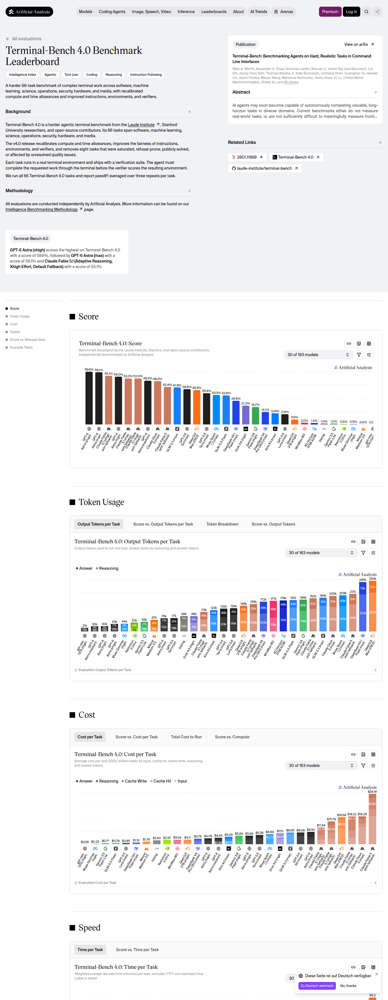
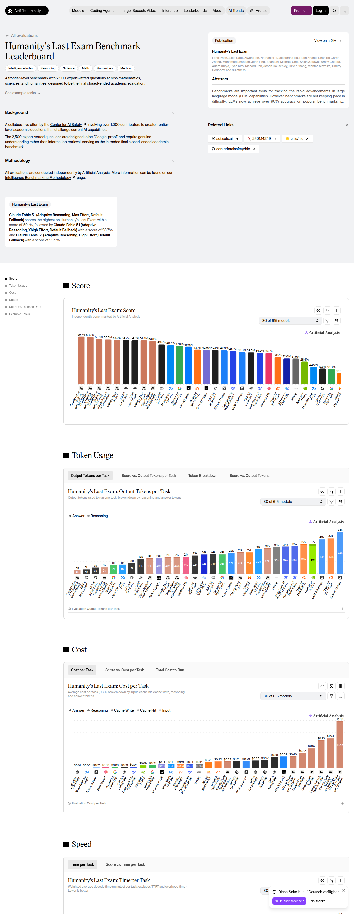
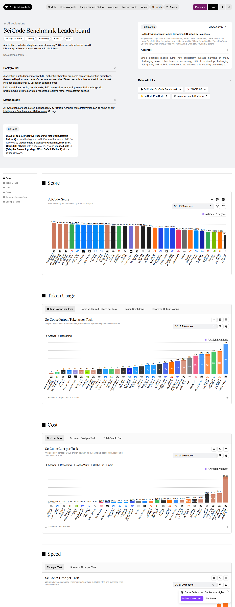
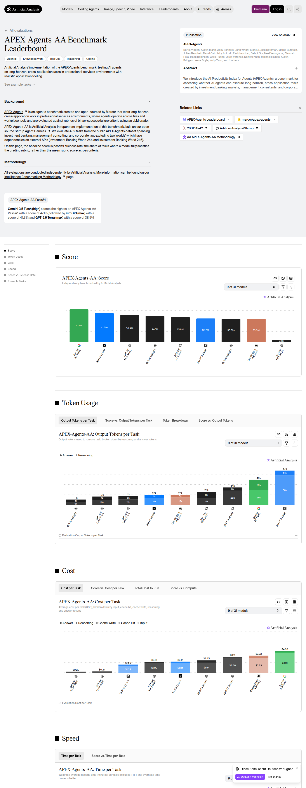
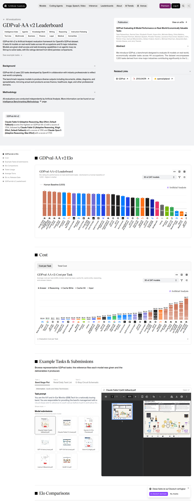
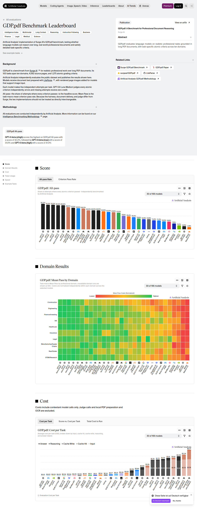

SUPRABENCH · CURATION RUN · 2026-09-17-e · batch 2 of 2
Dense frontier backfill from Artificial Analysis
The ranking audit of 16–17 September 2026 showed that SupraBench under-measured the current frontier: Claude Fable 5.1 had five benchmark cells in production while its publisher-run results covered fifteen, results of one release were scattered over several configuration names, and the benchmarks on which every frontier release is measured today had been deferred run after run. This batch inserts cells that Artificial Analysis publishes and production lacked. Nothing is replaced or removed; existing cells — whatever their source — are left untouched.
Values were read from the result matrix embedded in the publisher's pages (payload self.__next_f, arrays models and initialModels) at 2026-09-17T16:48:27.575Z and rounded to the precision the publisher displays (0.1 %, whole Elo points, 0.1 index points). The screenshots below document page, benchmark version and chart at read time.
Summary
- 116 score rows inserted across 9 sources (5 belong to the publisher's 30 default frontier models).
- New benchmarks in this batch: none.
- New models in this batch: none.
Source evidence
https://artificialanalysis.ai/evaluations/artificial-analysis-long-context-reasoning

https://artificialanalysis.ai/evaluations/terminalbench-v2-1

https://artificialanalysis.ai/evaluations/terminalbench-4-0

https://artificialanalysis.ai/evaluations/humanitys-last-exam

https://artificialanalysis.ai/evaluations/scicode

https://artificialanalysis.ai/evaluations/apex-agents-aa

https://artificialanalysis.ai/evaluations/aa-briefcase
https://artificialanalysis.ai/evaluations/gdpval-aa

https://artificialanalysis.ai/evaluations/gdp-pdf

Inserted rows
AA Long Context Reasoning — 36 rows
| Production model | Publisher row | Publisher value | Stored raw score |
|---|---|---|---|
| GPT-5.5 (medium) | GPT-5.5 (medium) | 0.83 | 830 |
| GPT-5.2 (xhigh) | GPT-5.2 (xhigh) | 0.826666666666667 | 827 |
| Claude Fable 5 (adaptive max/fallback) | Claude Fable 5 (with fallback) | 0.823333333333333 | 823 |
| Kimi K2.6 | Kimi K2.6 | 0.81 | 810 |
| GPT-5.5 (low) | GPT-5.5 (low) | 0.81 | 810 |
| GPT-5.1 (high) | GPT-5.1 (high) | 0.8 | 800 |
| GLM-5.2 (max) | GLM-5.2 (max) | 0.783333333333333 | 783 |
| Claude Opus 4.6 (max) | Claude Opus 4.6 (max) | 0.78 | 780 |
| Gemini 3 Flash | Gemini 3 Flash | 0.78 | 780 |
| Kimi K2.5 | Kimi K2.5 | 0.78 | 780 |
| Muse Spark | Muse Spark | 0.78 | 780 |
| Claude Opus 4.8 (max) | Claude Opus 4.8 (max) | 0.776666666666667 | 777 |
| GPT-5.4 mini (xhigh) | GPT-5.4 mini (xhigh) | 0.77 | 770 |
| GPT-5.4 nano (xhigh) | GPT-5.4 nano (xhigh) | 0.766666666666667 | 767 |
| Gemini 3 Pro Preview (high) | Gemini 3 Pro Preview (high) | 0.76 | 760 |
| Claude Opus 4.7 (Non-reasoning, high) | Claude Opus 4.7 (Non-reasoning, high) | 0.756666666666667 | 757 |
| GLM-5 | GLM-5 | 0.756666666666667 | 757 |
| DeepSeek V4 Pro (Max) | DeepSeek V4 Pro (max) | 0.746666666666667 | 747 |
| Gemini 3.5 Flash (medium) | Gemini 3.5 Flash (medium) | 0.743333333333333 | 743 |
| Gemini 3.1 Flash-Lite | Gemini 3.1 Flash-Lite | 0.743333333333333 | 743 |
| DeepSeek V4 Flash (Max) | DeepSeek V4 Flash (max) | 0.743333333333333 | 743 |
| Grok 4.1 Fast | Grok 4.1 Fast | 0.74 | 740 |
| Grok 4 Fast | Grok 4 Fast | 0.736666666666667 | 737 |
| GLM-5.1 | GLM-5.1 | 0.736666666666667 | 737 |
| DeepSeek V3.2 | DeepSeek V3.2 | 0.733333333333333 | 733 |
| Claude 4.5 Sonnet | Claude 4.5 Sonnet | 0.723333333333333 | 723 |
| Gemini 2.5 Pro | Gemini 2.5 Pro | 0.69 | 690 |
| Grok 4.20 0309 v2 | Grok 4.20 0309 v2 | 0.69 | 690 |
| Grok 4 | Grok 4 | 0.68 | 680 |
| Grok 4.20 0309 | Grok 4.20 0309 | 0.676666666666667 | 677 |
| GPT-5.4 nano | GPT-5.4 nano | 0.673333333333333 | 673 |
| Gemini 2.5 Flash | Gemini 2.5 Flash | 0.653333333333333 | 653 |
| o1 | o1 | 0.65 | 650 |
| Gemini 2.5 Flash-Lite | Gemini 2.5 Flash-Lite | 0.556666666666667 | 557 |
| Kimi K2 | Kimi K2 | 0.53 | 530 |
| Solar Pro 3 | Solar Pro 3 | 0.323333333333333 | 323 |
Terminal-Bench v2.1 (AA Terminus 2) — 25 rows
| Production model | Publisher row | Publisher value | Stored raw score |
|---|---|---|---|
| Claude Opus 4.8 (max) | Claude Opus 4.8 (max) | 0.846441947565543 | 846 |
| GPT-5.5 (xhigh) | GPT-5.5 (xhigh) | 0.842696629213483 | 843 |
| Claude Opus 4.7 (max) | Claude Opus 4.7 (max) | 0.831460674157303 | 831 |
| GPT-5.5 (medium) | GPT-5.5 (medium) | 0.805243445692884 | 805 |
| GPT-5.5 (high) | GPT-5.5 (high) | 0.794007490636704 | 794 |
| GPT-5.4 (xhigh) | GPT-5.4 (xhigh) | 0.782771535580524 | 783 |
| Muse Spark 1.1 (xhigh) | Muse Spark 1.1 (xhigh) | 0.779026217228464 | 779 |
| GLM-5.2 (max) | GLM-5.2 (max) | 0.779026217228464 | 779 |
| Claude Sonnet 4.6 (max) | Claude Sonnet 4.6 (max) | 0.711610486891386 | 712 |
| Kimi K2.6 | Kimi K2.6 | 0.659176029962547 | 659 |
| GPT-5.5 (low) | GPT-5.5 (low) | 0.655430711610487 | 655 |
| DeepSeek V4 Pro (Max) | DeepSeek V4 Pro (max) | 0.640449438202247 | 640 |
| Muse Spark | Muse Spark | 0.621722846441948 | 622 |
| GLM-5.1 | GLM-5.1 | 0.617977528089888 | 618 |
| DeepSeek V4 Flash (Max) | DeepSeek V4 Flash (max) | 0.617977528089888 | 618 |
| GPT-5.4 nano (xhigh) | GPT-5.4 nano (xhigh) | 0.606741573033708 | 607 |
| GPT-5.4 mini (xhigh) | GPT-5.4 mini (xhigh) | 0.591760299625468 | 592 |
| Claude 4.5 Sonnet | Claude 4.5 Sonnet | 0.558052434456929 | 558 |
| GPT-5.1 (high) | GPT-5.1 (high) | 0.524344569288389 | 524 |
| DeepSeek V3.2 | DeepSeek V3.2 | 0.468164794007491 | 468 |
| Kimi K2.5 | Kimi K2.5 | 0.456928838951311 | 457 |
| GPT-5 (high) | GPT-5 (high) | 0.352059925093633 | 352 |
| Gemini 3.1 Flash-Lite | Gemini 3.1 Flash-Lite | 0.310861423220974 | 311 |
| Gemini 2.5 Pro | Gemini 2.5 Pro | 0.284644194756554 | 285 |
| Solar Pro 3 | Solar Pro 3 | 0.119850187265918 | 120 |
Terminal-Bench 4.0 — 20 rows
| Production model | Publisher row | Publisher value | Stored raw score |
|---|---|---|---|
| Claude Fable 5 (adaptive max/fallback) | Claude Fable 5 (with fallback) | 0.424242424242424 | 424 |
| Claude Opus 4.8 (max) | Claude Opus 4.8 (max) | 0.217171717171717 | 217 |
| GPT-5.5 (xhigh) | GPT-5.5 (xhigh) | 0.146464646464646 | 146 |
| DeepSeek V4 Pro (Max) | DeepSeek V4 Pro (max) | 0.146464646464646 | 146 |
| Gemini 3.7 Flash (high) | Gemini 3.7 Flash (high) | 0.136363636363636 | 136 |
| GPT-5.5 (high) | GPT-5.5 (high) | 0.0909090909090909 | 91 |
| Muse Spark 1.2 (xhigh) | Muse Spark 1.2 (xhigh) | 0.0707070707070707 | 71 |
| Muse Spark 1.1 (xhigh) | Muse Spark 1.1 (xhigh) | 0.0606060606060606 | 61 |
| GPT-5.5 (medium) | GPT-5.5 (medium) | 0.0505050505050505 | 51 |
| Claude Sonnet 4.6 (max) | Claude Sonnet 4.6 (max) | 0.0303030303030303 | 30 |
| DeepSeek V4 Flash (Max) | DeepSeek V4 Flash (max) | 0.0252525252525253 | 25 |
| GLM-5.1 | GLM-5.1 | 0.0202020202020202 | 20 |
| GPT-5.4 mini (xhigh) | GPT-5.4 mini (xhigh) | 0.0202020202020202 | 20 |
| GLM-5.2 (max) | GLM-5.2 (max) | 0.0101010101010101 | 10 |
| Kimi K2.6 | Kimi K2.6 | 0.00505050505050505 | 5 |
| Gemini 3.1 Flash-Lite | Gemini 3.1 Flash-Lite | 0.00505050505050505 | 5 |
| GPT-5.4 nano (xhigh) | GPT-5.4 nano (xhigh) | 0.00505050505050505 | 5 |
| Gemini 2.5 Pro | Gemini 2.5 Pro | 0 | 0 |
| Claude 4.5 Sonnet | Claude 4.5 Sonnet | 0 | 0 |
| Solar Pro 3 | Solar Pro 3 | 0 | 0 |
Humanity's Last Exam — 16 rows
| Production model | Publisher row | Publisher value | Stored raw score |
|---|---|---|---|
| Claude Opus 4.8 (max) | Claude Opus 4.8 (max) | 0.486561631139944 | 487 |
| Muse Spark 1.1 (xhigh) | Muse Spark 1.1 (xhigh) | 0.462001853568119 | 462 |
| Gemini 3.5 Flash (medium) | Gemini 3.5 Flash (medium) | 0.413345690454124 | 413 |
| GLM-5.2 (max) | GLM-5.2 (max) | 0.411492122335496 | 411 |
| GPT-5.2 (xhigh) | GPT-5.2 (xhigh) | 0.376737720111214 | 377 |
| GPT-5.2 Codex (xhigh) | GPT-5.2 Codex (xhigh) | 0.357275254865616 | 357 |
| KAT-Coder-Pro V1 | KAT-Coder-Pro V1 | 0.336422613531047 | 336 |
| Claude Opus 4.7 (Non-reasoning, high) | Claude Opus 4.7 (Non-reasoning, high) | 0.333178869323448 | 333 |
| GPT-5.5 (low) | GPT-5.5 (low) | 0.326691380908248 | 327 |
| Grok 4.20 0309 | Grok 4.20 0309 | 0.323911028730306 | 324 |
| GLM-5 | GLM-5 | 0.292863762743281 | 293 |
| GPT-5 (high) | GPT-5 (high) | 0.28498609823911 | 285 |
| GPT-5.1 (high) | GPT-5.1 (high) | 0.28498609823911 | 285 |
| GPT-5.4 nano (xhigh) | GPT-5.4 nano (xhigh) | 0.282669138090825 | 283 |
| o1 | o1 | 0.0701 | 70 |
| GPT-5 (minimal) | GPT-5 (minimal) | 0.0602409638554217 | 60 |
SciCode — 12 rows
| Production model | Publisher row | Publisher value | Stored raw score |
|---|---|---|---|
| Claude Opus 4.8 (max) | Claude Opus 4.8 (max) | 0.543981481481482 | 544 |
| GPT-5.4 mini (xhigh) | GPT-5.4 mini (xhigh) | 0.520833333333333 | 521 |
| GLM-5.2 (max) | GLM-5.2 (max) | 0.511574074074074 | 512 |
| DeepSeek V4 Pro (Max) | DeepSeek V4 Pro (max) | 0.508101851851852 | 508 |
| Claude Sonnet 4.6 (max) | Claude Sonnet 4.6 (max) | 0.501157407407407 | 501 |
| GPT-5.4 nano (xhigh) | GPT-5.4 nano (xhigh) | 0.472222222222222 | 472 |
| Gemini 2.5 Pro | Gemini 2.5 Pro | 0.462962962962963 | 463 |
| Claude 4.5 Sonnet | Claude 4.5 Sonnet | 0.457175925925926 | 457 |
| DeepSeek V4 Flash (Max) | DeepSeek V4 Flash (max) | 0.452546296296296 | 453 |
| GLM-5.1 | GLM-5.1 | 0.447916666666667 | 448 |
| Gemini 3.1 Flash-Lite | Gemini 3.1 Flash-Lite | 0.434027777777778 | 434 |
| Solar Pro 3 | Solar Pro 3 | 0.25462962962963 | 255 |
APEX-Agents-AA — 4 rows
| Production model | Publisher row | Publisher value | Stored raw score |
|---|---|---|---|
| Kimi K2.6 | Kimi K2.6 | 0.284660766961652 | 285 |
| DeepSeek V4 Pro (Max) | DeepSeek V4 Pro (max) | 0.242625368731563 | 243 |
| Gemini 3.1 Flash-Lite | Gemini 3.1 Flash-Lite | 0.121681415929204 | 122 |
| Kimi K2.5 | Kimi K2.5 | 0.11504424778761062 | 115 |
AA-Briefcase — 1 rows
| Production model | Publisher row | Publisher value | Stored raw score |
|---|---|---|---|
| Claude Fable 5 (adaptive max/fallback) | Claude Fable 5 (with fallback) | 1529.62 | 1530 |
GDPval-AA v2 — 1 rows
| Production model | Publisher row | Publisher value | Stored raw score |
|---|---|---|---|
| Claude Fable 5 (adaptive max/fallback) | Claude Fable 5 (with fallback) | 1631.46 | 1631 |
GDP.pdf — 1 rows
| Production model | Publisher row | Publisher value | Stored raw score |
|---|---|---|---|
| Claude Fable 5 (adaptive max/fallback) | Claude Fable 5 (with fallback) | 0.24 | 240 |
Validation
Generated by scripts/curation-aa-backfill.mjs; validated with npm run curation:validate, dry-run against upbeat-clam-790, applied once, D1 mirror drift checked afterwards. See the commit that publishes this report for the recorded results.